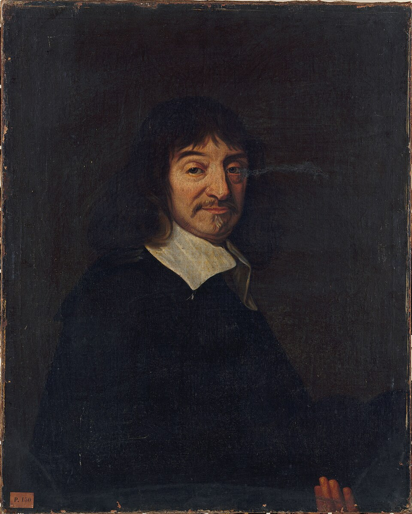
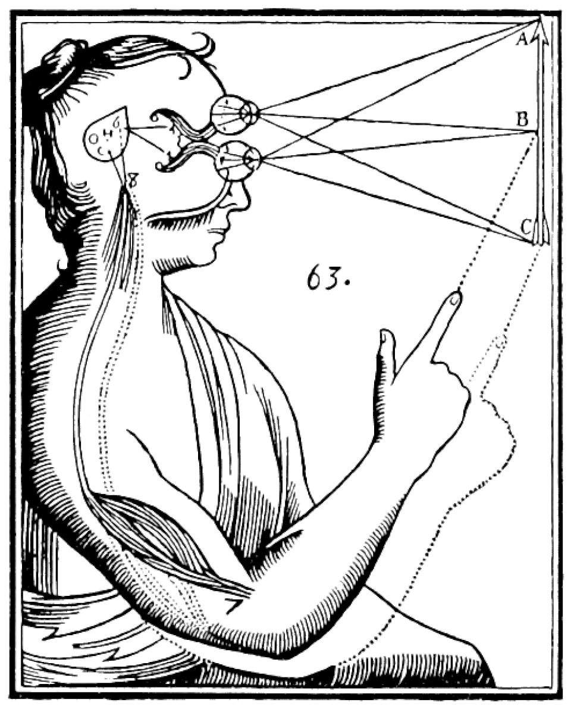

Who Was René Descartes?
René Descartes (1596–1650) was a French philosopher, mathematician, and natural philosopher whose work played a foundational role in the development of modern philosophy. He transformed philosophical discussions about knowledge, certainty, mind, body, God, mathematics, and the natural world. Descartes is especially associated with rationalism, the method of systematic doubt, and the famous cogito, commonly expressed as Cogito, ergo sum: "I think, therefore I am." :contentReference[oaicite:0]{index=0}
Descartes' philosophy begins with a fundamental problem: how can human beings distinguish genuine knowledge from beliefs that merely appear to be true? His response was not to doubt for its own sake, but to use doubt as a method for testing the foundations of belief. By temporarily setting aside everything that could conceivably be questioned, he searched for a principle that remained certain even under the most radical skepticism.
This investigation led to the recognition that the very act of doubting or thinking confirms the existence of the thinker. From this starting point, Descartes attempted to reconstruct knowledge on secure foundations and to explain the relationship between the thinking mind, the material body, God, and the external world. His emphasis on clear and distinct ideas became central to his theory of knowledge and metaphysics. :contentReference[oaicite:1]{index=1}
The philosophical system that developed from this project influenced epistemology, metaphysics, philosophy of mind, philosophy of science, and later debates between rationalism and empiricism. His distinction between mind and body also became one of the defining problems of modern philosophy. Descartes therefore occupies a central position in Western intellectual history and remains one of the most influential and extensively studied philosophers of the early modern period. :contentReference[oaicite:2]{index=2}
René Descartes: Quick Facts
- Full name — René Descartes
- Born — 31 March 1596
- Died — 11 February 1650
- Nationality — French
- Known for — Rationalism, Cartesian doubt, the cogito, analytic geometry, and mind-body dualism
- Philosophical period — Early modern philosophy
- Major fields — Epistemology, metaphysics, philosophy of mind, mathematics, optics, and natural philosophy
- Famous phrase — Cogito, ergo sum ("I think, therefore I am")
- Major work — Meditations on First Philosophy (1641)
- Other major work — Discourse on the Method (1637)
- Philosophical tradition — Rationalism
- Major influence — Modern Western philosophy, mathematics, and early modern science
René Descartes' Early Life and Historical Background

René Descartes was born on 31 March 1596 in La Haye, in the Touraine region of France, a town later renamed Descartes in his honor. He was born into a family connected with the legal and administrative world, and his father expected him to pursue a similar career. His mother, Jeanne Brochard, died when he was still an infant, and his early years were largely spent in the care of members of his extended family. :contentReference[oaicite:3]{index=3}
Around 1606 or 1607, Descartes entered the Jesuit College of La Flèche, one of the leading educational institutions of France. There he received a rigorous education in classical languages, literature, mathematics, and the traditional philosophical curriculum of logic, ethics, physics, and metaphysics. The philosophy taught at the college was strongly shaped by Aristotle and the scholastic tradition that had dominated European universities for centuries. :contentReference[oaicite:4]{index=4}
Although Descartes later criticized the uncertainty and disagreements he found within philosophy, his education at La Flèche gave him an extensive intellectual foundation. Mathematics particularly impressed him because it appeared to offer a degree of clarity and demonstrative certainty that other disciplines often lacked. This contrast helped inspire his lifelong search for a method capable of guiding inquiry toward reliable and well-founded knowledge. :contentReference[oaicite:5]{index=5}
After leaving La Flèche, Descartes studied law at the University of Poitiers and received degrees in canon and civil law in 1616, though he never practiced as a lawyer. His intellectual development instead continued through travel, military service, and encounters with mathematicians and natural philosophers. These experiences exposed him to a wider European world in which inherited philosophical assumptions were increasingly being challenged. :contentReference[oaicite:6]{index=6}
Descartes lived during the intellectual transformation now associated with the Scientific Revolution. New developments in astronomy, mathematics, mechanics, and optics were encouraging scholars to reconsider traditional explanations of nature. Descartes sought to contribute to this transformation by developing both a new philosophical method and a systematic account of the natural world, helping establish many of the central questions that would define early modern thought. :contentReference[oaicite:7]{index=7}
Descartes and the Scientific Revolution
Descartes lived during the Scientific Revolution, a period in which European thinkers increasingly challenged traditional explanations of nature and sought new mathematical and mechanical methods of investigation. Developments in astronomy, mechanics, and mathematics, associated with figures such as Nicolaus Copernicus, Johannes Kepler, and Galileo Galilei, contributed to an intellectual environment in which the mathematical description of natural phenomena became increasingly important.
Descartes believed that philosophy and mathematics should contribute to a systematic understanding of nature. His work ranged across metaphysics, physics, optics, physiology, and geometry, reflecting an early modern ideal in which philosophical inquiry and the investigation of the natural world were closely connected. His Discourse on the Method, published in 1637, appeared together with scientific essays that demonstrated aspects of his approach to optics, geometry, and physical explanation.
One of Descartes' most important contributions to mathematics was the development of analytic geometry, which established a powerful connection between algebra and geometry. His mathematical work reinforced his conviction that complex problems could be investigated through method, analysis, and orderly reasoning. Mathematics therefore served not merely as one field among others, but as an important model for the kind of clarity and intelligibility he sought in philosophy and natural science.
His conception of physical nature was strongly mechanistic. Descartes attempted to explain material phenomena through the properties of matter and the motion and interaction of bodies rather than through the substantial forms and purposes central to much Aristotelian natural philosophy. In Cartesian physics, the essential attribute of material substance is extension: bodies occupy space and can be understood in terms of size, shape, position, and motion.
This mechanistic account of matter was closely connected with his metaphysics. Descartes distinguished between the thinking mind and the extended material body, creating the influential framework known as Cartesian dualism. Although many of his particular scientific theories were later rejected or replaced, his attempt to combine mathematical reasoning, mechanical explanation, and systematic philosophical foundations made him a major figure in the intellectual transformation of seventeenth-century Europe.
Why Is René Descartes Called the Father of Modern Philosophy?
René Descartes is often called the father of modern philosophy because of the powerful influence his work exerted on the direction of philosophical inquiry in the early modern period. The title should not suggest that modern philosophy began with Descartes alone, since many earlier Renaissance and scientific thinkers contributed to its development. Rather, it recognizes the unusual importance of his attempt to establish philosophy on new and systematically examined foundations.
Instead of beginning by simply accepting inherited philosophical authorities, Descartes asked how knowledge itself could be justified. Which beliefs are genuinely secure, and which rest upon habit, tradition, sensory appearances, or unexamined assumptions? His method of doubt was designed to expose uncertain foundations and discover a starting point that could withstand even the most radical skeptical challenge. :contentReference[oaicite:1]{index=1}
His emphasis on the thinking subject became a defining feature of modern epistemology. Philosophy was increasingly concerned not only with the nature of reality itself, but also with the conditions under which a human being can know reality. Descartes' question therefore became fundamentally epistemological: before constructing an account of the world, what can the thinker establish with certainty?
The cogito gave this project a distinctive starting point. In discovering certainty in the activity of thinking, Descartes placed first-person reflection at the center of his philosophical method. This did not mean that he believed reality consisted only of individual consciousness; rather, the certainty of the thinking self provided the first secure point from which he attempted to investigate God, material reality, and the foundations of science.
Descartes did not create modern philosophy by abandoning every earlier tradition. He remained deeply engaged with questions inherited from ancient and medieval philosophy, particularly questions concerning substance, God, the soul, knowledge, and the nature of reality. His importance lies in the way he reformulated these problems through a method centered on certainty, reason, systematic inquiry, and the reflective perspective of the thinking subject.
What Is Cartesian Philosophy?
Cartesian philosophy refers to the philosophical system, concepts, and methods associated with René Descartes. The term "Cartesian" comes from Cartesius, the Latinized form of his name. Cartesian thought is particularly associated with systematic doubt, the cogito, rationalism, clear and distinct perception, the distinction between mind and body, and the attempt to establish knowledge upon secure metaphysical foundations.
A central feature of Cartesian philosophy is its foundationalist ambition. Descartes sought to organize knowledge as a system resting upon principles capable of supporting further conclusions. Before such a system could be constructed, however, uncertain beliefs had to be examined and set aside. Methodological doubt therefore functions as a preliminary stage in the search for indubitable foundations rather than as Descartes' final philosophical position. :contentReference[oaicite:2]{index=2}
Cartesian philosophy is also closely associated with the importance of reason. Descartes believed that certain truths could be grasped by the intellect and did not depend entirely upon sensory experience. Yet his position should not be reduced to the simple claim that human beings never learn through the senses. His central question was whether the senses could provide the highest degree of certainty required for the foundations of metaphysical knowledge.
The system connects epistemology and metaphysics at nearly every stage. Descartes begins by asking what can be known with certainty, but his inquiry leads to questions concerning the nature of the self, the existence and nature of God, the reliability of clear and distinct perceptions, and the distinction between thinking substance and extended matter. For Descartes, questions about knowledge cannot be completely separated from questions about what reality fundamentally is.
Cartesian philosophy also developed into a broader intellectual movement after Descartes' death. Later thinkers adopted, criticized, or transformed elements of his system, and Cartesian ideas influenced debates in metaphysics, science, theology, psychology, and philosophy of mind. Even philosophers who rejected his conclusions often defined their own positions through direct engagement with the problems he had placed at the center of modern philosophical discussion.
What Is Descartes' Method of Doubt?
The method of doubt is one of the most famous features of Descartes' philosophy. Descartes deliberately examines his beliefs for possible grounds of doubt in order to discover whether anything remains absolutely certain. This procedure is often called Cartesian doubt or methodological skepticism, because doubt is used as a method rather than defended as a permanent conclusion about the impossibility of knowledge. :contentReference[oaicite:3]{index=3}
Descartes begins by questioning the reliability of information received through the senses. The senses sometimes deceive us, particularly under unusual conditions or when objects are distant or difficult to perceive. From this observation, he does not conclude that all sensory experience is constantly false; instead, he argues that beliefs based upon the senses cannot automatically serve as an absolutely indubitable foundation for knowledge.
He then introduces the dream argument. Even when an experience appears vivid and entirely convincing, Descartes observes that dreams can sometimes seem real while they are occurring. This raises the possibility that he cannot establish with complete certainty that his present experience belongs to waking life rather than a dream. The argument places ordinary beliefs about the immediate external world under a deeper level of philosophical doubt.
Descartes pushes doubt still further through the thought experiment of a supremely powerful deceiver, commonly described as the evil demon or evil genius. Under this hypothesis, even apparently certain reasoning in mathematics might be called into question. The scenario is deliberately hyperbolic: Descartes does not claim that such a being actually exists, but uses the possibility of systematic deception to test the strongest candidates for certainty. :contentReference[oaicite:4]{index=4}
The purpose of this procedure is constructive rather than destructive. Descartes does not doubt simply for the sake of doubting, as he himself distinguishes his project from a skepticism that remains permanently suspended in uncertainty. He uses radical doubt as a philosophical tool for clearing away questionable assumptions and discovering something sufficiently secure to serve as a foundation for further knowledge. :contentReference[oaicite:5]{index=5}
Why Did Descartes Doubt the Senses?
Descartes' concern was not that sensory experience is useless or that human beings should reject ordinary perception in everyday life. His distinction is between practical reliability and the exceptionally high standard of certainty required for the foundations of philosophy. A belief may be reasonable and useful in ordinary circumstances while still failing to provide the kind of certainty Descartes sought in his search for indubitable first principles.
What Is the Cogito? — "I Think, Therefore I Am"
The cogito is the central discovery that emerges from Descartes' method of doubt. It is commonly expressed in the Latin phrase Cogito, ergo sum, meaning "I think, therefore I am." The famous Latin formulation appears in works such as the Discourse on the Method and the Principles of Philosophy; in the Meditations on First Philosophy, Descartes instead formulates the insight as the certainty that "I am, I exist" whenever he thinks it. :contentReference[oaicite:6]{index=6}
The basic insight is that the attempt to doubt one's own existence confirms the existence of the thinker at the moment of thinking. If Descartes doubts, questions, imagines, understands, denies, or is being deceived, then thinking is taking place. Even an all-powerful deceiver could not deceive him into being nothing while he is engaged in the act of thinking, because the occurrence of that thought establishes that he exists as a thinking being. :contentReference[oaicite:7]{index=7}
The cogito is therefore more than a simple inference from one statement to another. A major interpretive question is whether Descartes regards it as a formal argument or as an immediate intellectual recognition. What is essential to his project is that the certainty of existence is discovered through reflection upon the activity of thinking itself. The proposition cannot be successfully doubted while it is being genuinely conceived. :contentReference[oaicite:8]{index=8}
The importance of the cogito is not simply the conclusion that "I exist." Descartes identifies the self, at this stage of the Meditations, primarily as a thinking thing—a being whose activities include doubting, understanding, affirming, denying, willing, imagining, and experiencing sensations. From this starting point, he attempts to rebuild his account of knowledge and investigate God, material reality, the human body, and the possibility of scientific knowledge.
Why Is the Cogito Important?
The cogito became one of the defining arguments and ideas of modern philosophy because it gave unprecedented importance to the thinking subject within epistemological inquiry. Later philosophers repeatedly responded to, criticized, or transformed the Cartesian conception of the self. Questions concerning consciousness, subjectivity, personal identity, self-knowledge, and the relation between thought and reality continue to engage with problems that Descartes helped bring into sharp philosophical focus.
Descartes' Rationalism and Theory of Knowledge
Rationalism is a broad philosophical orientation that emphasizes the importance of reason, intellectual intuition, and deduction in the acquisition of knowledge. René Descartes is commonly regarded as one of the major figures associated with the rationalist tradition, alongside philosophers such as Baruch Spinoza and Gottfried Wilhelm Leibniz. However, the categories of "rationalist" and "empiricist" are later historical classifications and should not erase the important differences among individual philosophers. :contentReference[oaicite:9]{index=9}
Descartes believed that certain truths could be grasped through intellectual reasoning rather than derived entirely from sensory experience. Mathematics provided an important model because mathematical inquiry appeared capable of producing necessary and demonstrable truths. He therefore sought a philosophical method that would identify simple and secure principles and proceed from them through orderly reasoning.
His rationalism does not mean that Descartes simply rejected the senses or denied their importance in ordinary life and scientific inquiry. Sensory experience plays an important role in human interaction with the physical world. His central epistemological concern was whether sensory experience could provide the highest degree of certainty needed for metaphysical foundations, or whether some truths could be known more securely through the operations of the intellect. :contentReference[oaicite:10]{index=10}
Descartes' theory of knowledge therefore gives special importance to clear and distinct perception. When the intellect apprehends an idea with sufficient clarity and distinctness, Descartes treats this kind of intellectual awareness as fundamentally different from confused sensory appearances. The exact role of clear and distinct ideas within his system, particularly their relationship to his proofs concerning God, became one of the most debated issues in Cartesian scholarship. :contentReference[oaicite:11]{index=11}
Descartes and the Rationalist Tradition
Descartes' emphasis on reason helped shape a major current of early modern philosophy later associated with Spinoza and Leibniz. These thinkers differed significantly from one another, but each explored the possibility that reason could reveal necessary truths and that the mind possessed intellectual resources not reducible to immediate sensory experience. Their work helped define the philosophical debates that later became known as the conflict between rationalism and empiricism. :contentReference[oaicite:12]{index=12}
Descartes and the Search for Certainty
The search for certainty is one of the central concerns of Descartes' epistemology. He wanted philosophical inquiry to rest upon foundations capable of resisting serious skeptical challenges, and he frequently compared the organization of knowledge to the construction of a building. Just as a stable structure requires a firm foundation, a system of knowledge requires principles that are not undermined by uncertainty. :contentReference[oaicite:13]{index=13}
Descartes therefore distinguishes between beliefs that may be accepted in ordinary life and knowledge possessing the highest possible degree of certainty. Rather than rejecting every doubtful belief as permanently false, his methodological procedure temporarily withholds assent from beliefs that can be called into question. The purpose is to discover secure starting points from which further knowledge might be established.
The cogito provides the first decisive example of such certainty. Descartes then seeks principles that can extend knowledge beyond the immediate certainty of his own existence. This leads to his famous emphasis on clear and distinct ideas, which he regards as central to understanding how the intellect can grasp truth with a special degree of certainty. :contentReference[oaicite:14]{index=14}
A major difficulty arises because Descartes must explain why human beings can trust even apparently self-evident perceptions. His arguments concerning the existence and non-deceptive nature of God are intended to address this problem within the larger structure of the Meditations. The relationship between clear and distinct perception and the proofs of God became the subject of the famous problem often called the Cartesian Circle. :contentReference[oaicite:15]{index=15}
Descartes' project therefore represents more than a simple demand that people should "be certain" before believing anything. It is an attempt to understand what makes knowledge secure, how doubtful assumptions can be removed, and whether a systematic body of knowledge can be constructed from principles that the mind recognizes with exceptional clarity. This foundationalist ambition became one of his most enduring contributions to modern epistemology.
What Did Descartes Mean by Innate Ideas?
Innate ideas are central to Descartes' account of the intellectual resources of the mind. In broad terms, an idea is innate when its essential content is not derived solely from sensory experience but belongs to the mind's own rational capacities or nature. Descartes' doctrine of innateness became an important source of debate in early modern philosophy and later discussions about the origins of human knowledge. :contentReference[oaicite:16]{index=16}
In the Meditations, Descartes distinguishes among ideas that appear to come from outside the mind, ideas constructed or invented by the mind, and ideas that are innate. This classification should not be understood too simply, however. Descartes' mature account raises complex questions about how experience can occasion or stimulate thought while the intelligible content of certain concepts nevertheless depends upon capacities belonging to the mind itself. :contentReference[oaicite:17]{index=17}
Mathematics and metaphysics provide important examples of the kind of intellectual content Descartes believed could not be explained merely as a collection of sensory impressions. His discussions of extension, substance, geometrical truth, and the infinite all support his conviction that the intellect can grasp structures and concepts that go beyond the changing appearances delivered by the senses.
The idea of an infinite and perfect being is especially important in his philosophy. Descartes argues that his idea of God cannot simply be explained as an arbitrary invention constructed from his experience of finite objects. He uses the distinctive content of this idea in developing his arguments concerning God's existence and in explaining how human beings recognize their own finitude and imperfection. :contentReference[oaicite:18]{index=18}
The doctrine of innate ideas became highly controversial. Later empiricists, especially John Locke, challenged the claim that the mind possesses innate conceptual content and argued that human ideas could instead be explained through experience and reflection. The resulting disagreement helped shape one of the major debates of early modern philosophy: whether the fundamental materials of knowledge originate primarily in experience, reason, or some more complex relationship between the two. :contentReference[oaicite:19]{index=19}
Descartes' Philosophy of God
God occupies an essential position in Descartes' philosophy. After establishing the certainty of the thinking self, Descartes asks whether reason can establish the existence of God and what God's nature implies for human knowledge. His philosophy of God is therefore not an isolated theological addition to his system; it is closely connected with his attempt to establish a secure foundation for metaphysics and epistemology.
In the Third Meditation, Descartes develops an argument based upon the idea of God as an infinite and supremely perfect being. He argues, in broadly causal terms, that the idea of an infinite being requires an adequate cause and cannot be fully explained by a finite and imperfect thinker as though it were merely an arbitrary invention. This argument forms part of his attempt to establish God's existence through reflection on the content and origin of his ideas.
Descartes also presents another important argument in the Fifth Meditation, often described as a version of the ontological argument. Here he argues that existence belongs inseparably to the nature of a supremely perfect being in a way analogous, though not identical, to how certain properties belong to the nature of geometrical figures. These arguments have remained among the most discussed and criticized parts of Cartesian metaphysics.
The existence of a perfect and non-deceiving God plays a crucial role in Descartes' account of knowledge. Since systematic deception would be incompatible with divine perfection, Descartes seeks to use God's nature to explain why the human faculty of reason is not fundamentally designed to lead us into unavoidable error. This connection helps support his confidence in clear and distinct perceptions within the larger structure of his philosophical system. :contentReference[oaicite:20]{index=20}
Descartes nevertheless does not claim that human beings never make mistakes. His account of error distinguishes the finite human intellect from the will's ability to extend judgment beyond what the intellect clearly understands. Error arises when judgment goes beyond what is adequately perceived, rather than because a perfect God created human beings with an unavoidable tendency toward falsehood. The problem of God, truth, freedom, and error is therefore deeply interconnected in Cartesian philosophy. :contentReference[oaicite:21]{index=21}
What Were Descartes' Arguments for the Existence of God?
Descartes presents several arguments concerning the existence of God, particularly in the Meditations on First Philosophy. His two most important approaches are the causal argument developed in the Third Meditation and the ontological argument presented most fully in the Fifth Meditation. These arguments are not merely separate theological exercises: they form part of Descartes' larger attempt to move beyond the isolated certainty of the thinking self and establish a secure metaphysical foundation for knowledge.
In the causal argument, Descartes examines his idea of God as an infinite, eternal, independent, and supremely perfect being. He argues that there must be sufficient reality in a cause to account for the reality represented in its effect. Since he understands himself as a finite and imperfect being, he maintains that he cannot be the ultimate cause of the idea of infinite perfection merely by inventing it from his own limited resources. God, therefore, must ultimately account for the presence of this idea in the mind.
Descartes also develops an argument concerning his own existence as a finite being. He asks why he continues to exist and argues that, if he possessed the power to sustain himself independently, he would have no reason to lack the perfections he clearly conceives in God. His existence as a dependent and imperfect being therefore points, within the structure of his reasoning, toward a cause capable of accounting for his continued existence and the idea of perfection he possesses.
The ontological argument takes a different route. Descartes argues that existence belongs necessarily to the nature of a supremely perfect being. Just as certain properties belong inseparably to the nature of a geometrical figure, he maintains that necessary existence cannot be separated from the clear and distinct idea of God as a being possessing every perfection. A supremely perfect being that lacked existence, Descartes argues, would not possess every perfection.
These arguments have been extensively debated and criticized by later philosophers. Immanuel Kant, for example, famously challenged the idea that existence could function as an ordinary predicate or perfection that adds a property to a concept. Whether Descartes' proofs succeed remains deeply contested, but their importance lies partly in the role they play within his wider philosophical system, where God becomes closely connected with truth, knowledge, and the reliability of human reason.
Descartes' Metaphysics and Theory of Substance
Descartes' metaphysics seeks to identify the most fundamental kinds of reality and the essential properties that define them. His mature system distinguishes God from created substances and gives particular importance to the difference between mind and matter. Strictly speaking, Descartes regards God as the only substance capable of existing entirely independently, while created substances depend continuously upon God for their existence.
The two principal kinds of created substance are mind and body, or material substance. Each is understood through its principal attribute. The essence of mind is thought, while the defining characteristic of physical matter is extension. A body occupies space and can be described in terms of size, shape, position, and motion, whereas a thinking being engages in activities such as doubting, understanding, affirming, denying, willing, imagining, and experiencing sensations.
This distinction is not simply a classification of two different sets of properties. Descartes argues that thought and extension reveal two genuinely different kinds of created substance. The mind is not a body with especially complicated properties, and matter is not itself a thinking entity. Their different essential attributes provide the basis for Descartes' influential theory of substance dualism.
Descartes also distinguishes substances from their modes. A mode is a way in which a substance exists or is modified. Particular thoughts, acts of willing, and sensations are modes of a thinking substance, while particular shapes and motions are modes of extended substance. This framework allowed Descartes to construct a systematic metaphysical account in which changing experiences and physical events are understood in relation to more fundamental kinds of being.
The resulting metaphysics became enormously influential because it connected questions about knowledge with questions about reality itself. Descartes' attempt to establish the existence of God, determine the nature of the self, explain material extension, and distinguish mind from body created a framework that later philosophers would repeatedly defend, transform, or reject.
What Is Descartes' Mind-Body Dualism?

Descartes' mind-body dualism is the view that mind and body are fundamentally different kinds of created substance. The mind is characterized by thought, while the body is characterized by extension. This position became known as Cartesian dualism and remains one of the most influential theories in the history of philosophy of mind.
For Descartes, the mind is not defined by occupying physical space. Thinking includes a broad range of conscious activities, including doubting, understanding, affirming, denying, willing, imagining, and sensory awareness. Physical bodies, by contrast, possess spatial dimensions and can be studied in terms of shape, size, position, and motion. This distinction supported Descartes' attempt to understand physical nature through mathematical and mechanical explanation.
Descartes argues that mind and body can be conceived clearly and distinctly apart from one another, and he uses this difference in their essential natures to support the claim that they are genuinely distinct. The argument does not deny that mind and body are closely connected in human life. Instead, it attempts to explain why conscious thought and physical extension cannot simply be identified as one and the same fundamental kind of reality.
Cartesian dualism became enormously influential because it raised a difficult philosophical question: if mind and body possess fundamentally different properties, how can they nevertheless interact so intimately? Physical injuries produce conscious pain, while intentions and decisions appear capable of producing bodily movement. This difficulty became the classical mind-body problem and remains central to debates about consciousness and mental causation.
Later philosophers developed radically different responses. Some sought to reduce mental phenomena to physical processes, others defended new forms of dualism, and still others attempted to reconceive the relation between mind and matter altogether. The continuing influence of these debates demonstrates why Descartes' distinction between thought and extension remains one of the most important starting points in the history of philosophy of mind.
Descartes' Philosophy of Mind and the Soul
Descartes' philosophy of mind identifies the thinking self primarily with the mind or soul rather than with the physical body. During the early stages of the Meditations, he can doubt the existence of the external world and even the existence of his own body, but he cannot doubt that thinking is occurring. From this certainty, he concludes that he knows himself first as a thinking thing.
The Cartesian mind is not limited to abstract reasoning. Descartes uses the concept of thought broadly to include doubting, understanding, affirming, denying, willing, refusing, imagining, and having sensory experiences. This broad conception is important because it places conscious experience, rather than merely logical reasoning, at the center of his understanding of mental life.
This does not mean that Descartes believed human beings ordinarily exist as detached minds floating independently of their bodies. In the Sixth Meditation, he emphasizes that the mind and body are intimately united in human experience. Hunger, thirst, pain, pleasure, and bodily sensation reveal that a human being experiences the body not merely as an external object but as something with which the mind is deeply joined.
Descartes therefore presents two important aspects of human existence. Metaphysically, mind and body have different essential natures and can be understood as distinct substances. Experientially, however, human beings are embodied beings whose mental and physical lives are closely interconnected. This tension between distinction and union is one of the most important and difficult features of Cartesian philosophy.
His account of the mind and soul influenced later debates about consciousness, personal identity, perception, freedom, and the relation between mental and physical states. Contemporary discussions of whether consciousness can be fully explained in physical terms still confront, in transformed form, problems that became especially prominent through Cartesian philosophy.
What Is the Mind-Body Problem in Descartes' Philosophy?
The mind-body problem asks how mental and physical phenomena are related. In Descartes' philosophy, the problem becomes especially acute because mind and body appear to possess fundamentally different essential properties. The mind thinks but does not occupy space in the way bodies do, while the body is extended and subject to mechanical motion but is not itself characterized by conscious thought.
Human experience nevertheless appears to involve continuous interaction between mental and bodily states. A physical injury can produce pain, sensory stimulation can give rise to perception, and a conscious decision can be followed by bodily movement. Descartes therefore faced the problem of explaining how a non-extended thinking substance could be causally connected with an extended physical organism.
Descartes associated mind-body interaction particularly with the pineal gland, a small structure located near the center of the brain. He regarded it as the principal bodily location at which the soul exercised its functions and where sensory information and bodily processes could be related to mental experience. His theory was based on the anatomical and physiological assumptions available in the seventeenth century and is not accepted by modern neuroscience.
The pineal gland proposal did not resolve the deeper philosophical difficulty. Explaining where interaction occurs does not by itself explain how two fundamentally different kinds of substance can exert causal influence upon one another. This problem was forcefully raised by later critics, including Princess Elisabeth of Bohemia, whose correspondence with Descartes exposed important difficulties in his account of mental and bodily interaction.
Why Was Cartesian Dualism So Influential?
Cartesian dualism provided a powerful framework for distinguishing subjective consciousness from physical matter. Even philosophers who rejected Descartes' theory continued to investigate the relationship between conscious experience and the physical brain in response to the problem his philosophy helped bring into sharp focus. Materialism, idealism, property dualism, and many contemporary theories of mind can all be understood partly through their relationship to this enduring Cartesian problem.
Descartes' Philosophy of Nature and Matter
Descartes' philosophy of nature treats physical matter primarily in terms of extension. To be material is to occupy space, and physical bodies can therefore be described through spatial properties such as size, shape, position, and motion. This conception allowed Descartes to develop a strongly mathematical and mechanistic picture of the natural world.
Rather than explaining physical phenomena primarily through the substantial forms and teleological principles associated with much Aristotelian natural philosophy, Descartes attempted to explain nature through the properties of matter in motion. In principle, many physical phenomena could be understood by examining the size, shape, arrangement, and movement of material parts. This mechanical approach became one of the defining features of Cartesian natural philosophy.
Descartes sought a universe governed by intelligible laws rather than one whose physical events required explanation through hidden purposes or intrinsic tendencies. His natural philosophy therefore connected metaphysical principles with mathematical reasoning and mechanical explanation. The nature of matter, the laws governing motion, and the structure of the cosmos were all intended to form parts of a unified philosophical account of reality.
Some important features of Cartesian physics later faced serious challenges, particularly from Newtonian physics. Descartes' theories of motion and his rejection of action at a distance were eventually superseded in many areas of science. Nevertheless, his attempt to replace traditional qualitative explanations with systematic mechanical accounts was an important part of the intellectual transformation of seventeenth-century natural philosophy.
Descartes' philosophy of nature should therefore not be judged simply by whether each of its scientific conclusions survived. Its broader historical importance lies in its attempt to construct a comprehensive, mathematically intelligible account of the physical world and to connect the investigation of nature with systematic philosophical principles.
Descartes and the Scientific Method
Descartes is closely associated with the development of a systematic method of inquiry, although it would be misleading to identify his method with the entire modern scientific method. His writings emphasize intellectual clarity, analysis, deduction, and the orderly investigation of complex problems. He sought procedures that could guide the mind away from confusion and toward certain and intelligible knowledge.
In the Discourse on the Method, Descartes famously describes four practical rules for directing inquiry. He advises accepting only what presents itself clearly enough to avoid premature judgment, dividing difficult problems into smaller parts, proceeding from simpler matters toward more complex ones, and making reviews sufficiently complete to avoid omissions. These principles reflect his broader ideal of disciplined and methodical reasoning.
His earlier and unfinished Rules for the Direction of the Mind provides an even more detailed discussion of method. There Descartes gives particular importance to intellectual intuition, deduction, and the analysis of complex questions into simpler elements. His conception of method was intended to apply across mathematics, natural philosophy, and metaphysics rather than belonging exclusively to one scientific discipline.
Descartes also recognized a role for observation and experiment in the investigation of nature, particularly when reasoning from fundamental principles alone could not determine which physical possibilities were actually realized. Nevertheless, his approach placed greater emphasis on metaphysical foundations and deductive explanation than later forms of experimental science would.
Descartes' method should therefore be understood as one important contribution to the broader development of modern scientific and philosophical inquiry. Modern science emerged through the work of many thinkers, experimental traditions, mathematical innovations, and institutions. Descartes' distinctive contribution was his powerful vision of systematic inquiry guided by analysis, reason, mathematics, and the search for intelligible first principles.
Major Philosophical Works of René Descartes
Descartes wrote across philosophy, mathematics, physics, physiology, and natural philosophy. His major works reveal the extraordinary range of his intellectual project, from the foundations of knowledge and the existence of God to optics, geometry, emotions, and the mechanical explanation of nature. Several became foundational texts in the development of early modern philosophy.
- Discourse on the Method (1637) — A major work presenting Descartes' methodological approach to knowledge and inquiry. It includes the famous formulation associated with the cogito and was published together with essays on optics, meteorology, and geometry.
- Meditations on First Philosophy (1641) — Descartes' most important metaphysical work, examining doubt, certainty, the cogito, God, mind, body, and the foundations of knowledge. The work was published together with objections from contemporary thinkers and Descartes' detailed replies.
- Principles of Philosophy (1644) — A systematic presentation of Cartesian metaphysics and natural philosophy, covering God, the mind, material substance, motion, and the structure of the physical universe.
- Rules for the Direction of the Mind — An early and unfinished methodological work concerned with intellectual intuition, deduction, and the systematic direction of reasoning toward certain knowledge. It was published posthumously.
- The Passions of the Soul (1649) — Descartes' final major work published during his lifetime, examining emotions, bodily processes, the interaction of mind and body, and the role of the passions in human life.
- La Géométrie (1637) — A major mathematical essay associated with Descartes' development of analytic geometry and the powerful connection between algebraic equations and geometrical problems.
René Descartes' Main Philosophical Ideas
1. Methodological Doubt
Descartes uses systematic doubt to test whether beliefs can survive the strongest possible skeptical challenges. Sensory error, dreaming, and the hypothesis of radical deception are used to expose uncertain assumptions. The objective is not permanent skepticism, but the discovery of a foundation for knowledge that cannot be overturned while it is clearly grasped.
2. The Cogito
The cogito establishes the certainty of the thinking self. Even if everything else is doubted, the attempt to doubt confirms that thinking is occurring and that the thinker exists at least while engaged in that activity. Descartes thereby discovers his first secure point of certainty in the reflective awareness of thought itself.
3. Rationalism
Descartes gives a central role to reason, intellectual intuition, and deduction in the acquisition of knowledge. He believes that certain truths can be grasped by the intellect with a degree of necessity and certainty that sensory experience alone cannot provide. His approach became a major source of the philosophical tradition later called rationalism.
4. Mind-Body Dualism
Descartes distinguishes the thinking mind from extended physical substance. Thought and extension are different essential attributes, and this distinction provides the basis for his theory of substance dualism. The resulting difficulty of explaining their interaction became one of the central problems in philosophy of mind.
5. Clear and Distinct Ideas
Descartes argues that what the mind perceives clearly and distinctly possesses a special claim to truth. This principle becomes central to his attempt to extend knowledge beyond the immediate certainty of the cogito, although its ultimate justification is closely connected with his arguments concerning the existence and non-deceptive nature of God.
6. God as a Metaphysical Foundation
Descartes' arguments concerning God are closely connected with his attempt to establish the reliability of human cognition and move beyond the isolated certainty of the thinking self. God functions within his metaphysical system as the infinite and perfect foundation whose non-deceptive nature helps explain why properly exercised human cognitive faculties can attain truth.
Descartes, Spinoza, and Leibniz: The Rationalist Tradition
René Descartes is often placed at the beginning of a major current of early modern European philosophy later described as the rationalist tradition. Philosophers such as Baruch Spinoza and Gottfried Wilhelm Leibniz developed ambitious metaphysical systems that shared Descartes' confidence in reason while disagreeing profoundly with important aspects of Cartesian philosophy. The category of rationalism is therefore useful for comparison, but should not hide the significant differences among these thinkers.
Spinoza transformed Cartesian metaphysics by rejecting the idea that mind and body are two separate created substances. He developed a monistic account in which there is only one infinite substance, which he identified as God or Nature. Mind and body, within this system, are understood as different attributes or ways of understanding the same underlying reality rather than independently created substances.
Leibniz developed a different alternative. He rejected the Cartesian conception of material substance and proposed a metaphysics based upon simple, non-extended entities called monads. His philosophy also developed distinctive accounts of perception, God, freedom, and the apparent relationship between mind and body, including the doctrine of pre-established harmony.
Comparing these philosophers demonstrates how influential Descartes' questions became. Spinoza and Leibniz did not simply repeat Cartesian philosophy; they developed competing solutions to problems concerning substance, knowledge, God, mind, body, and the intelligibility of the universe. Their disagreements show that the rationalist tradition was not a single doctrine but a continuing philosophical conversation about the powers and limits of reason.
Descartes and Empiricism: Locke and Hume
Descartes' philosophy became an important point of contrast for later thinkers commonly associated with the empiricist tradition. Philosophers such as John Locke, George Berkeley, and David Hume gave experience and perception a more fundamental role in explaining the origins and limits of human knowledge. Their work developed partly in response to questions about reason, innate ideas, and certainty that Cartesian philosophy had made especially prominent.
John Locke famously criticized the doctrine of innate ideas, arguing that the human mind does not begin life furnished with ready-made principles or conceptual content of the kind rationalists often proposed. He instead emphasized sensation and reflection as the major sources from which human ideas and knowledge develop. Locke's criticism became one of the most influential challenges to Cartesian accounts of the origins of knowledge.
David Hume pushed empiricism in a more skeptical direction. He examined whether reason and experience can justify beliefs concerning causation, the continued existence of objects, and the stable identity of the self. His analysis suggested that many beliefs human beings naturally hold cannot be justified through purely rational demonstration or direct sensory observation alone.
The opposition between rationalism and empiricism later became one of the standard ways of organizing early modern philosophy, although the historical reality is more complex than a simple division between two completely opposed schools. Descartes nevertheless provided a powerful model of philosophy centered on reason, certainty, intellectual foundations, and the special capacities of the mind, against which later empiricists could develop alternative accounts of knowledge.
Descartes' Influence on Modern Philosophy
The influence of René Descartes extends across epistemology, metaphysics, philosophy of mind, mathematics, and natural philosophy. His determination to begin philosophical inquiry by asking what can be known with certainty gave exceptional importance to the thinking subject and helped make problems of justification and knowledge central concerns of modern philosophy.
Later philosophers responded to his ideas in dramatically different ways. Spinoza and Leibniz developed alternative rationalist systems, while Locke and Hume challenged important assumptions about innate ideas and the powers of reason. Kant later sought to transform the relationship between rationalist and empiricist approaches, while German Idealists developed new accounts of consciousness, subjectivity, and the structure of knowledge.
Descartes' influence also extends beyond philosophy. His mathematical work helped establish a powerful relationship between algebra and geometry, while his mechanical conception of nature contributed to the broader intellectual transformation associated with seventeenth-century science. His writings on optics, physics, physiology, and mathematics demonstrate the extent to which philosophical and scientific inquiry remained interconnected within his intellectual project.
His philosophy of mind remains especially influential. Contemporary debates about consciousness, the relation between mental experience and the brain, artificial intelligence, subjective experience, and personal identity continue to confront questions shaped in part by the Cartesian distinction between thought and physical extension. Even when modern philosophers reject substance dualism, they often address problems that became particularly prominent through Descartes' work.
Descartes' most enduring influence may therefore lie not only in the doctrines he defended but also in the philosophical problems he helped define. Questions about certainty, skepticism, self-knowledge, the nature of consciousness, the relation between mind and body, and the foundations of science remain central to philosophical inquiry centuries after his death.
René Descartes' Philosophy Explained Simply
Descartes' philosophy can be understood as an attempt to discover what human beings can know with genuine certainty. Instead of beginning by trusting every belief inherited from tradition or everyday experience, he temporarily questions everything that could possibly be false. His goal is to find a foundation so secure that even the strongest skeptical challenge cannot destroy it.
- What can I know for certain? Descartes begins with radical doubt and discovers that the very act of thinking cannot occur without establishing the existence of a thinker at the moment the thought takes place.
- What is the cogito? The cogito is the insight expressed by "I think, therefore I am." Even if a person is mistaken about everything else, the activity of doubting or thinking confirms that the thinker exists while thinking.
- Why is reason important? Descartes believes that the intellect can grasp certain truths with a degree of clarity and necessity that does not depend entirely upon changing sensory appearances.
- What is mind-body dualism? Descartes distinguishes the thinking mind from the extended physical body. The mind is characterized by thought, while the body is characterized by occupying space and undergoing physical motion.
- Why is God important? Descartes uses arguments about God as part of his attempt to move beyond the certainty of the thinking self and establish a broader foundation for knowledge, truth, and the reliability of human reason.
- Why is Descartes important? His philosophy helped establish many of the central questions of modern Western thought, especially questions concerning skepticism, certainty, consciousness, mind, body, and the foundations of knowledge.
Why Is René Descartes Important in the History of Philosophy?
René Descartes is important because he transformed the philosophical investigation of knowledge and certainty. His method of doubt forced philosophers to confront the possibility that apparently obvious beliefs might rest upon uncertain foundations. The cogito then offered a powerful model for beginning philosophical inquiry with what the thinker can know directly through reflection upon the activity of thought.
His metaphysics was equally influential. The distinction between mind and body shaped centuries of debate about consciousness, personal identity, perception, physical matter, and mental causation. Even philosophers who rejected Cartesian dualism continued to address the problem of how subjective mental experience relates to the physical world.
Descartes also made major contributions to mathematics and natural philosophy. His work helped strengthen the connection between algebra and geometry, while his mechanical conception of matter contributed to the broader transformation of seventeenth-century approaches to nature. His intellectual career therefore cannot be understood by separating his philosophy completely from his scientific and mathematical work.
More broadly, Descartes helped define the intellectual character of early modern philosophy. His emphasis on reason, systematic inquiry, mathematical intelligibility, and the search for secure foundations encouraged philosophers to reconsider inherited assumptions about how knowledge should be established and what the fundamental structure of reality might be.
His lasting importance lies not in the fact that every Cartesian theory was accepted by later generations—many were strongly criticized or rejected—but in the extraordinary influence of the questions he posed. Descartes remains essential for understanding the development of modern epistemology, rationalism, metaphysics, philosophy of mind, mathematics, and the continuing philosophical search to understand what human beings can genuinely know.
Frequently Asked Questions About René Descartes
Who was René Descartes?
René Descartes was a seventeenth-century French philosopher, mathematician, and scientist. He is one of the most important figures in early modern philosophy and is particularly known for rationalism, Cartesian doubt, the cogito, and mind-body dualism.
What is René Descartes famous for?
Descartes is famous for the statement "I think, therefore I am," his method of doubt, rationalist philosophy, arguments concerning God, mind-body dualism, and major works such as Meditations on First Philosophy and Discourse on the Method.
What is Descartes' philosophy?
Descartes' philosophy centers on the search for certain knowledge through reason and systematic doubt. His philosophical system includes epistemology, rationalism, metaphysics, philosophy of mind, arguments for God, and a distinction between mind and body.
What does "I think, therefore I am" mean?
"I think, therefore I am" expresses the Cartesian insight that the act of thinking provides certainty that a thinking subject exists. Even if everything else is doubted, the occurrence of doubt itself requires thinking.
What is Cartesian doubt?
Cartesian doubt is Descartes' method of deliberately questioning beliefs that could possibly be false. He uses sensory error, the possibility of dreaming, and radical skeptical scenarios to search for a foundation of knowledge that cannot be doubted.
What is Descartes' method of doubt?
Descartes' method of doubt involves temporarily suspending confidence in beliefs that are not completely certain. The purpose is not to remain skeptical forever but to discover an indubitable foundation from which knowledge can be reconstructed.
What is Descartes' cogito?
The cogito is the philosophical insight that thinking establishes the existence of the thinker. It is associated with the Latin phrase Cogito, ergo sum, commonly translated as "I think, therefore I am."
Was Descartes a rationalist?
Yes. Descartes is widely regarded as one of the founding figures of early modern rationalism. He emphasized reason, intellectual certainty, and the possibility of knowledge that is not derived solely from sensory experience.
What is Descartes' mind-body dualism?
Descartes' mind-body dualism is the view that mind and body are fundamentally distinct. The mind is characterized by thought, while physical bodies are characterized by extension in space.
What is the mind-body problem in Descartes?
The Cartesian mind-body problem concerns how a non-physical thinking mind can interact with an extended physical body. This problem became one of the central questions in modern philosophy of mind.
What did Descartes believe about God?
Descartes believed in a perfect and non-deceiving God and presented several philosophical arguments for God's existence. His conception of God also plays an important role in his attempt to establish the reliability of clear and distinct ideas.
What were Descartes' arguments for God?
Descartes developed arguments including a causal argument based on the idea of an infinite and perfect being and an ontological argument concerning the necessary existence of a supremely perfect being.
What are Descartes' innate ideas?
Innate ideas are ideas that Descartes regards as belonging to the mind in a way that is not reducible to sensory experience. His doctrine became an important point of disagreement between rationalists and empiricists.
What is Descartes' theory of knowledge?
Descartes' theory of knowledge emphasizes certainty, reason, the cogito, clear and distinct ideas, and the careful examination of potentially unreliable beliefs. His epistemology seeks a secure foundation for human knowledge.
What are Descartes' major philosophical works?
Descartes' major philosophical works include Discourse on the Method, Meditations on First Philosophy, Principles of Philosophy, Rules for the Direction of the Mind, and The Passions of the Soul.
Why is Descartes called the father of modern philosophy?
Descartes is often called the father of modern philosophy because he placed the problem of certainty and the thinking subject at the center of philosophical inquiry. His method and arguments profoundly influenced later epistemology, metaphysics, and philosophy of mind.
How did Descartes influence modern philosophy?
Descartes influenced modern philosophy by establishing major problems concerning certainty, consciousness, mind and body, rationalism, knowledge, God, and the foundations of science. Later rationalists, empiricists, and idealists developed their own positions partly in response to Cartesian philosophy.
How did Descartes influence Spinoza and Leibniz?
Descartes helped establish the rationalist philosophical environment in which Spinoza and Leibniz developed their systems. Both thinkers adopted important aspects of rationalist methodology while rejecting or transforming significant parts of Cartesian metaphysics.
How did Descartes differ from Locke and Hume?
Descartes emphasized reason and intellectual foundations of knowledge, while Locke and Hume developed empiricist approaches that placed much greater emphasis on experience and perception. Their disagreement became part of the larger rationalism versus empiricism debate.
What did Descartes contribute to mathematics?
Descartes made important contributions to mathematics, particularly through his work connecting algebra and geometry. His La Géométrie is associated with the development of what is now known as analytic or Cartesian geometry.
Why is Descartes important today?
Descartes remains important because many contemporary discussions of consciousness, knowledge, skepticism, personal identity, and the relationship between mind and brain continue to engage with problems that his philosophy helped formulate.
Related Enlightenment and Modern Philosophers
Explore other major thinkers who shaped rationalism, empiricism, Enlightenment philosophy, modern philosophy, and the development of Western philosophical thought.
Related Areas of Philosophy
Descartes' philosophy connects early modern philosophy with epistemology, metaphysics, rationalism, philosophy of mind, philosophy of science, logic, and the historical debate between rationalism and empiricism.
Why René Descartes Still Matters
René Descartes occupies a foundational position in the history of modern philosophy. His attempt to discover certainty through systematic doubt transformed philosophical discussions about knowledge and placed the thinking subject at the center of epistemological investigation.
His philosophy also established problems that continue to shape philosophical debate. The cogito, Cartesian doubt, rationalism, arguments for God, clear and distinct ideas, and mind-body dualism became central reference points for later philosophers. Even thinkers who rejected his conclusions often developed their own theories partly in response to Cartesian philosophy.
Understanding Descartes is therefore essential for understanding the transition from medieval to modern philosophy and the development of later rationalism, empiricism, Enlightenment philosophy, and contemporary philosophy of mind. His questions about certainty, consciousness, reason, and reality remain relevant to philosophy today.
Explore Great Philosophers